The psychology of learning is something that captivates me and I often find myself looking for opportunities to use technology to enhance the learning experience. This project was inspired by research on practice techniques from peak performance fields like music and sports. I explored how to make use of these techniques to learn and develop skills.
Personal development | Education
Visual design | User Experience | User Testing
August 2021
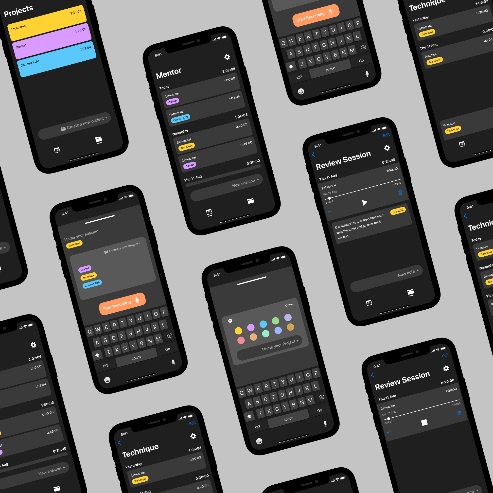
Mentor is a concept for an app that leverages the principles of deliberate practice. The purpose of the app is to help users learn and improve skills. It can be used to log practice sessions and provides a space where users can organise and review their progress. By making use of audio recording, users can analyse their sessions, take notes on what they want to improve and set goals for future sessions. Due to the audio nature of the app, it is targeted to people looking to improve skills with an audio based component like music performance and public speaking.
This project was inspired by the book Peak, written by Anders Ericsson and Robert Pool. The book is centred around their research on learning strategies and specifically looked at peak performance fields, like music and sports. They found that a key element that distinguishes those who reach the top of their fields is something they called deliberate practice. Deliberate practice refers to the notion that developing a skill does not only come down to the amount of time spent practicing but to the quality of that practice. Here are a few aspects that characterise deliberate practice and are crucial for learning and developing skills:
Learning occurs outside of your comfort zone
Dedicated focused time is necessary to develop a skill
Analysing your work and the work of others can be helpful to create mental representations of what success looks like
Mistakes are often the most powerful learning opportunities
From the insights on deliberate practice I gathered that making use of these strategies could be crucial for making learning more effective and efficient. I proposed that users could benefit from using an app based on these principles to learn and improve skills.
The key insights from deliberate practice that the app would leverage were:
The user could listen back and analyse their performance with the possibility to take notes at specific times
The app would log the practice sessions and help to increase focus while itself limiting distractions
The user would have the opportunity to listen back to their performance and spot areas for improvement that could have otherwise been missed
I started thinking about potential users and use cases to better understand their goals, needs and pain-points.
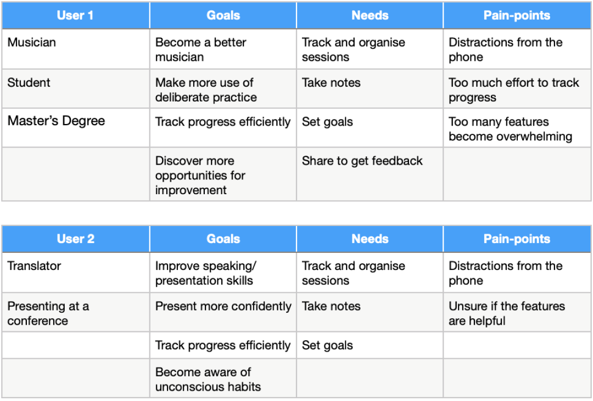
Creating a storyboard helped me empathise with potential users and figure out which features to prioritise.
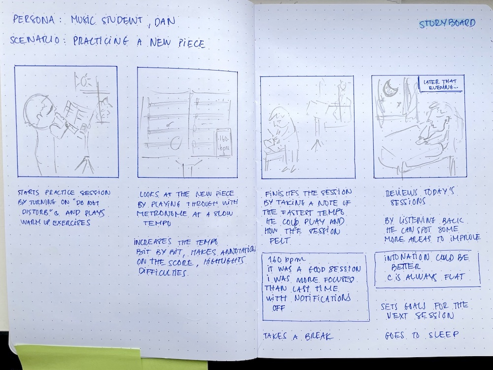
Here are the key insights from the storyboard:
The design and user experience should be as unobtrusive as possible during a practice session in order to help foster full attention of the user on their task
Users might want to take notes right after a session
Session reviews can be an important stage of developing a skill and spotting areas for improvement
At this stage I defined the specific goals of the project as well as constraints. Based on the insights from the target users I identified two main user goals: Improve skills & track progress. I assumed that users expected to see a clear benefit from using the app. Some ways this success could be measured included:
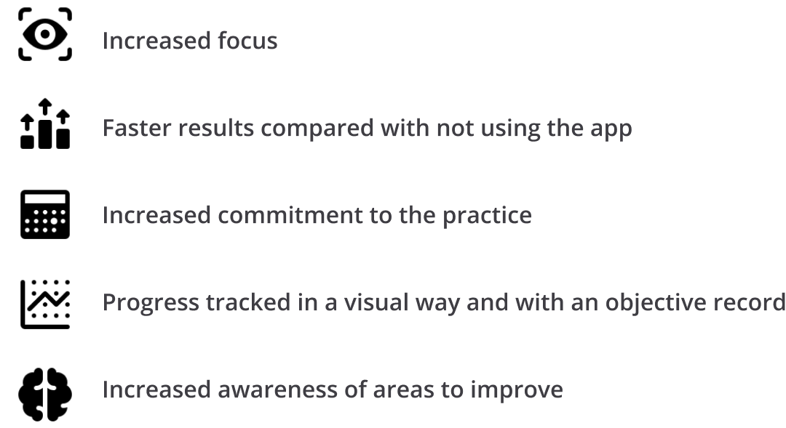
The required features included:
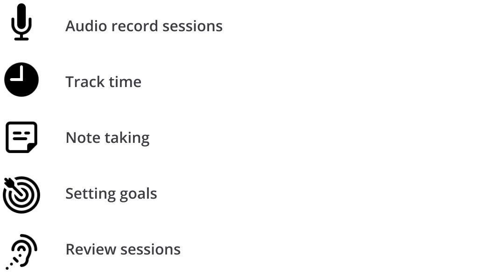
To limit the scope of the project I decided to constrain it to:
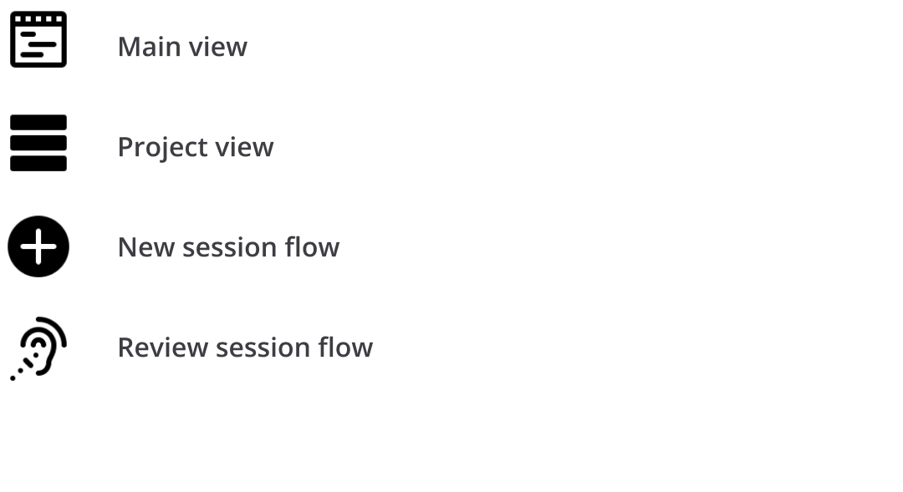
I started by sketching out how users would accomplish certain tasks. Through this exploration I decided that having two modes to view user sessions — one chronological and one by projects — could help users accomplish the two main tasks — create a new session and review a session. When I felt like I understood the overall flow I turned my sketches into user flows and constructed a simple information architecture.
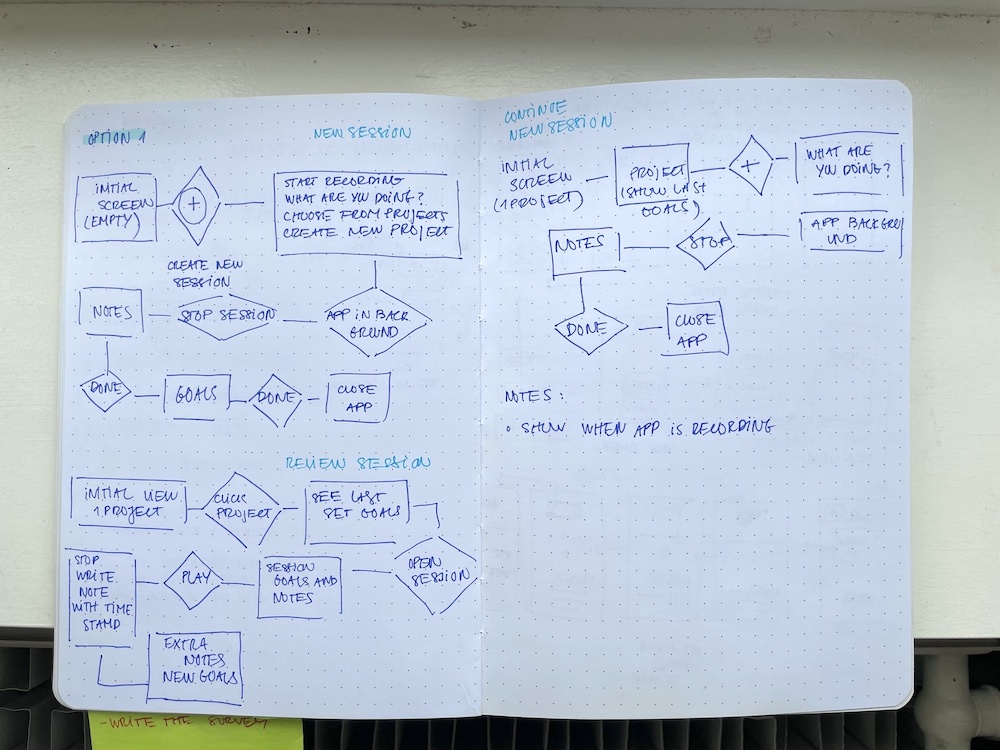
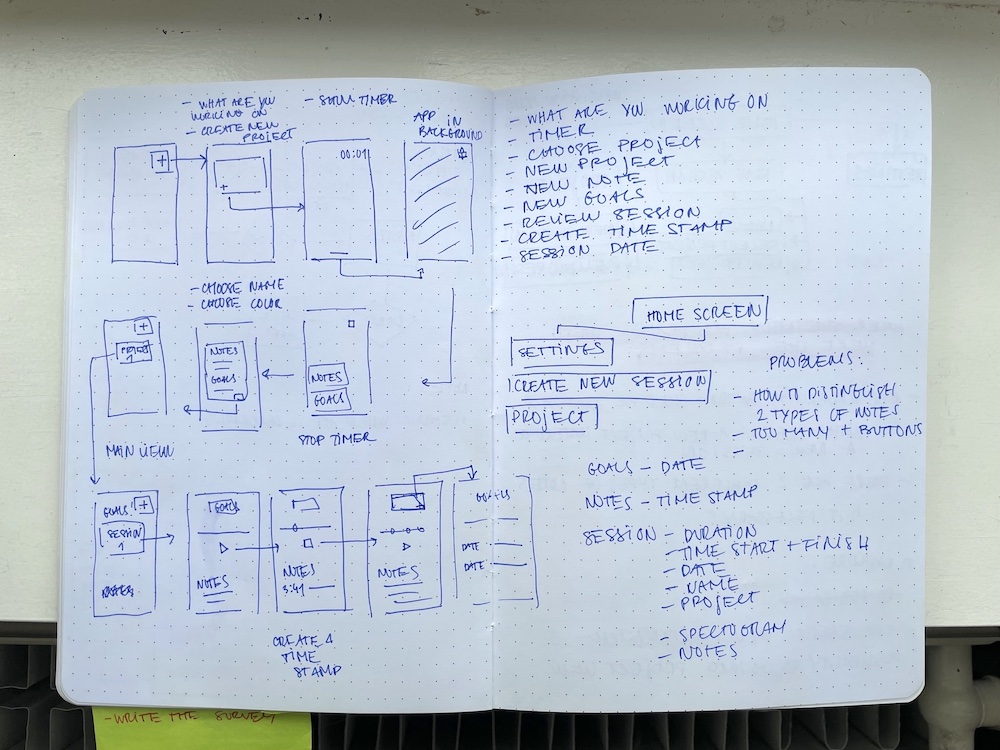
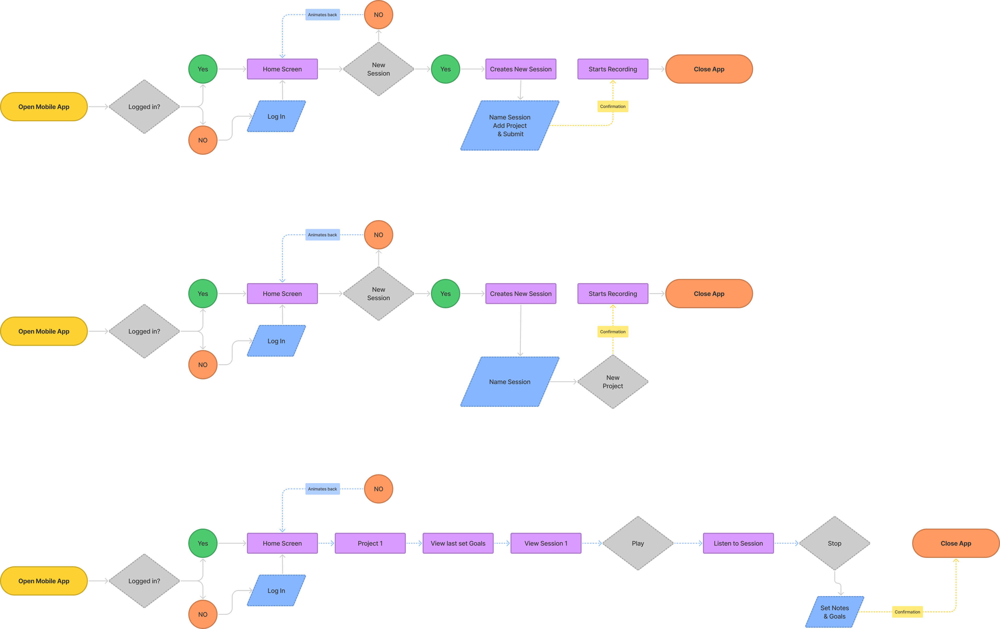
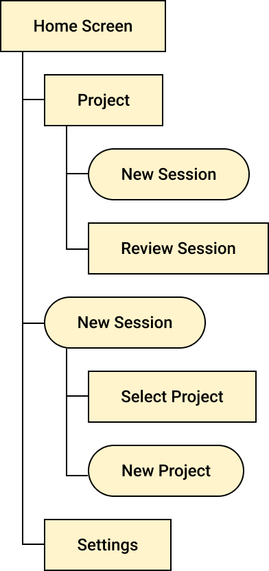
I created wireframes to identify the essential elements that users would interact with.
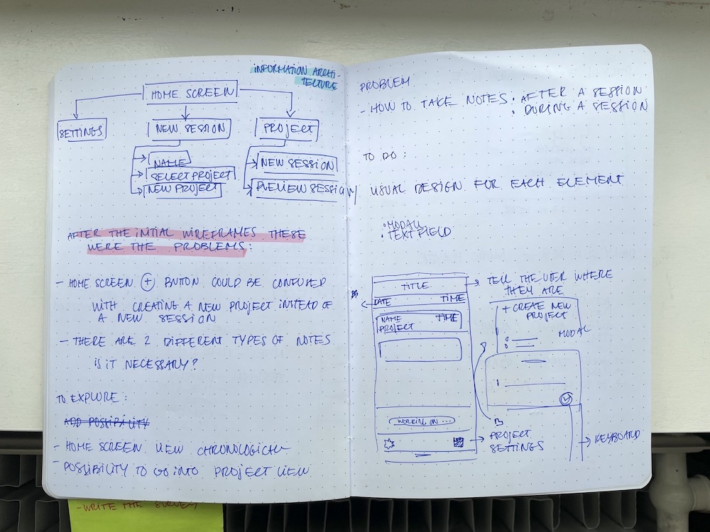
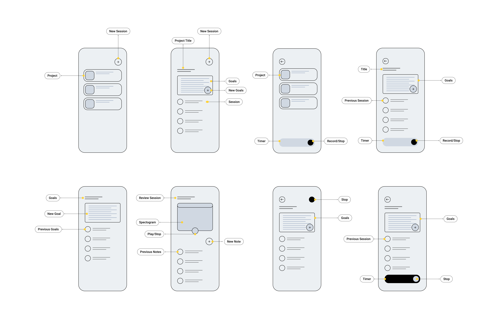
The main challenge of the flow turned out to be how the user inputs new information. I decided to prioritise information the user had inputed previously by offering an option to select previous projects in the form of tags. I added an option to create a new project that would prompt a new modal in order to define details for the new project.
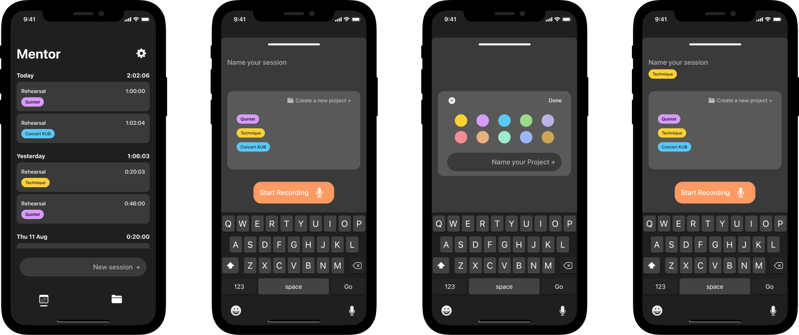
I created an interactive prototype to test my two flows with users — starting a new session and reviewing a session.
In order to test the user flow I created and conducted interviews with users. I used an interactive prototype to help me understand how users interacted with the app. The main areas I was looking to gain insight were:
How intuitive it was for users to accomplish tasks like creating a new session or reviewing a previous session
Were there preferred routes to accomplish the tasks
Were there any common problem points
Did anything go against users expectations
Here are the key insights from the storyboard:
Users got confused about their location within the app when asked to look for one of the projects. I needed a visual cue to communicate to users where they were.
Not all users identified where to start a new session from the main screen. This could have been more clear.
Overall it was intuitive for users to complete the tasks.
After reviewing the interviews I decided to keep the structure and flow that was tested and add additional cues to provide better feedback. Here’s what I did:
Changed the input field’s name that starts a new session from the main view to make it more clear and cohesive with the rest of the app.
Removed the settings from the tab bar because I realised it wasn’t something that users would access regularly.
Added two states to the tab bar icons to better signal the user’s location.
Check out the final prototype here.
The main focus of this project was on making the tasks easy and intuitive to accomplish. From what I observed this was successful although I could identify moments where users lacked proper feedback and became confused. I learned that making sure users know where they are coming from, where they are going and where they are, are essential cues to guide them through the tasks.
With more resources I would have liked to conduct preliminary research at the beginning of the project on potential users to better understand the real problems they are facing and goals they want to accomplish. Also, more usability testing would have helped in getting a better understanding of how users interact with the app.
I ended up limiting the features to focus on laying out the structure of the app with the most essential elements. It could be interesting to follow up with research on one of the initial features I had planned — setting goals — and work through how and if this could/should be implemented.